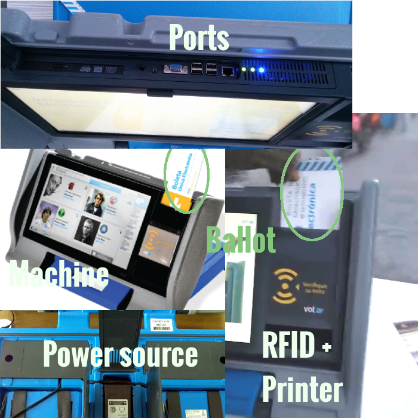
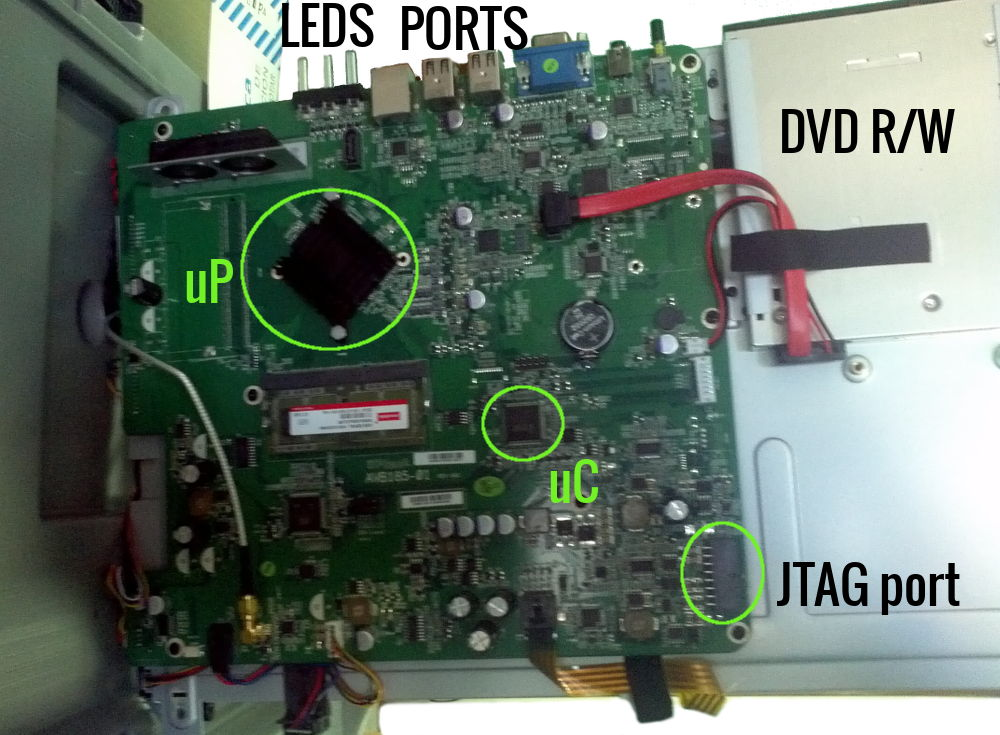
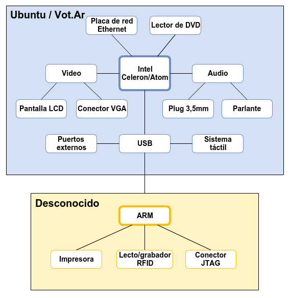

Vot.Ar: a bad election
A presentation about the Vot.Ar (aka BUE) system, its HW, SW & Vulns.
Also, a bit about eVoting.
How did this investigation begin?
- Through CaFeLUG group I was contacted for a private audit on the system.
- I got mad because of prohibition to touch/modify/carefully analyse things.
- I contacted Javier, who always gives talks in FLISOL about e-voting, told him my experience.
- He tells me about his idea, and things got in motion...
What did we find?
- Bad design, worst implementation
- Vulnerabilities due to bad software practice
- An very expensive system that doesn't present considerable advantages compared to the unique paper ballot system
How did we do this?
- About a week or so of hard work
- Unofficial: no assistance provided by company nor gov
- By going to public consultation points to have access to machines and ballots
- Plugging in a keyboard to let the magic happen :D
- Building a few devices for hardware tests:
- ballot reader
- ballot burner
- RFID jammer
- Lots of internet research
- Lots of thinking
- Great effort
Vot.Ar by MSA Group is a paper-based eVoting system, with two main elements:
- The vote-casting and counting machine
- The ballot
Main issue?
among others...
 It's RFID based!
It's RFID based!
Why is RFID such a bad idea?
Requirements for the system
This system:
- must NOT have permanent memory
- must NOT allow votes to be changed
Some things to note
- Completely closed HW & SW
- Absolutely no public documentation
(yet the maker say it's open source!) - Over 7 years of development
- Previously used in Salta
- Recently used in Resistencia, Chaco
- 2 official audits by the time of this report:
- Prof. Righetti, FCEN, UBA: OAT 03/15
Conclusion: small issues, but ok - Departamento de Informática, ITBA: DVT 56-504
Conclusion: inconclusive, recommendations given
- Prof. Righetti, FCEN, UBA: OAT 03/15
The system reported here is as it was used in this year's elections in Buenos Aires Autonomous City (CABA)
Overview of Vot.Ar
It has on the left:
- Touchscreen for operation (to pick candidates and stuff)
It has on the right:
- An RFID reader/writer + thermal printer unit
It has on the top:
-
DVD R/W, status LEDs & ports:
accessible for everyone, under a small lid- USB
- SVGA
- Ethernet
- Speaker
It has on the bottom:
- a power source + 2 battery pack
- and sometimes, a JTAG cable!
And then there's the ballot, which has an RFID chip + thermal paper on the back
Hang on, details are coming...
But propaganda said:
It's a printer, not a computer!
and everybody believed it!
 So here we were, tweeting from a "printer"...
So here we were, tweeting from a "printer"...
Now let's get deep into the HW
What's inside the machine?

Deeper inside (behind the screen):
- JTAG port: used to program/debug the microcontroller
- it has a cable outside (some machines had it even during elections!)

- Microprocessor (uP): Intel(R) Celeron(R) CPU N2930 @ 1.83GHz
- RAM memory: 2GB DDR3 1600
- Microcontroller (uC): Atmel AT91SAM7X256
- Internal E2PROM memory: 256KB (!)
So, we found an unknown subsystem:
The ARM controls the thermal printer and the RFID reader/writer.
Its internal E2PROM memory is sufficient to store every vote cast and more.
We know nothing about this, Jon Snow!
About the ballots (aka BUE cards)

- Paperboard with a print on one side, and thermal paper on the other + RFID chip
- The thin metal layer protects the chip from being read when the ballot is perfectly bent over
- Chip: ICODE SLI SL2 ICS20 (ISO 15693)
- has a unique ID code
More info about the chip and how data is stored, in the report
Time to analyse the SW
We were able to do it thanks to the help of someone named Prometheus, who published the source code.
- Lacks completely of (public) documentation and also in-code documentation
- Very few comments
- Untidy code
- No unit testing
This makes it hard to read, audit, maintain, improve...
...but ideal to breed nasty bugs...
...such as #multivote and others
Command injection
Alfredo Ortega found a command injection vulnerability in the QR Code generator routine
- msa/core/clases.py, line 190: a_qr_str() returns a comma-separated list of values
- msa/core/clases.py, line 206: a_qr() sends those values to the vulnerable function
- msa/core/qr.py, line 13: crear_qr() vulnerable function, executes the command without sanitising first
This routine is executed to print the names of the Board President and assistants.
PoC:
- First name:
John
- Last name:
Doe;echo 'this is bad!'
Nevertheless, the name input screen does sanitise and has a length limit, so exploiting this is very difficult.
Multivote
This vulnerability allows an attacker to add several votes in the RFID chip, as many as the chip's memory amount supports (about 10~12 votes).
Also, it's not mandatory to distribute the votes in any way: they can be for a single candidate, or split among several candidates, in the same or different electoral category.
You cannot differentiate between a multivote ballot and a normal one with a naked eye.
So, an attacker with access to a thermal printer and blank ballots (not too hard to get) could cast fake votes from beforehand that are very hard to detect.